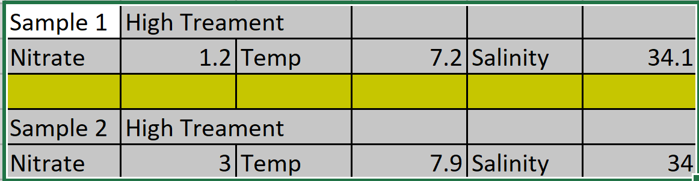
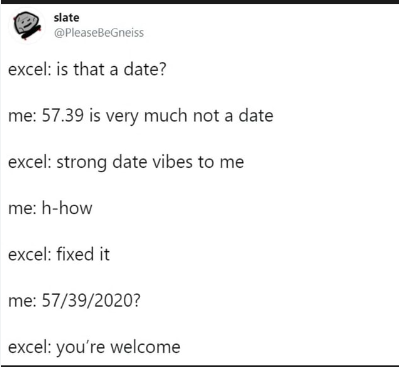
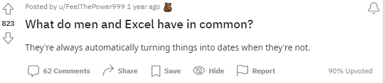

Computer Modeling (OCN 682)
Collecting and Recording Data
2026-08-21
Outline of class
- Data dimensions
- Metadata
- Create a data sheet for the field/lab
- Create a data sheet for data analysis
These are different, but equally important tools for transparent data.

Hybrid data
A mix of both…


We use metadata in our everyday lives


Creating a good data collecting sheet
A good field/lab data sheet answers:
- How easy is it to read in the field?
- Are column and row definitions clear?
- Is there metadata?
- How similar is it to your data entry sheet?
- Can you use it at 4am in the rain?

NOT good field or lab data sheets


Always keep a hard copy
Loose notes get lost, wet, or destroyed. Always keep an original hard copy of your data.
Never name a document “final”… it is a curse.

3. Write dates in ISO 8601 format
YYYY-MM-DD (e.g., 2026-01-23)
Excel makes dangerous mistakes with dates — ISO 8601 is the only safe standard.



8. NO calculations in your spreadsheets
Not transparent data analysis
Once saved as .csv, all formulas are gone — leaving numbers you cannot trace.
- Hidden calculations cause major, hard-to-find errors
- All calculations must live in your R script

10. Make back-ups!!
We will cover GitHub next week.
Consider also: Box, Dropbox, or Google Drive.
Never have your only copy on your hard drive.
This actually happened to me…

12. Save data as plain text
- Always save as
.csv(comma-separated values) - Non-proprietary — opens in any program, on any computer
- R reads
.csvfiles natively withread_csv()

What is wrong with this data sheet?